Here you can:
- Schedule automatic process start on a timer.
- Add a name template.
- Edit the instance summary page.
- Select the activity stream that will be displayed on the task and process instance page.
- Check API correctness.
- Restore the previous version of the process.
- Set the form to process debugging start.
Start settings
You can determine how the business process can be started.
- Create button. This option adds the process to the Create button’s context menu. The user will be able to start the process by clicking its name in the list. By default, the button can be found on the main page of the system, but it can also be added to forms and pages. Read more in the Create button article.
- Schedule. You can set a schedule to automatically start the process on specific days, weeks, or months. You can set the time considering the current business calendar. The settings are the same as for the start event.
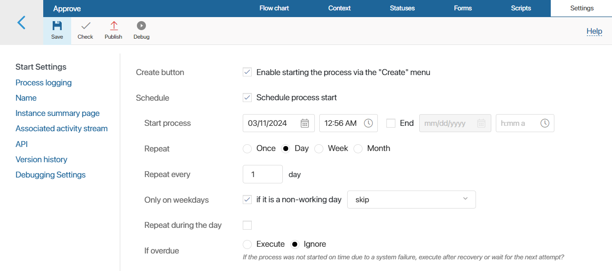
Process logging
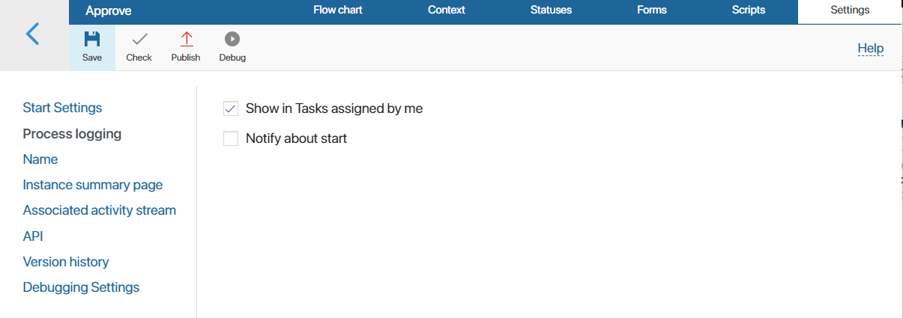
If you check the Show in Tasks assigned by me option, information about all started process instances will be shown in the Task section on the Assigned by me page. Click on an instance name to view its details: the process history, its context, and map. To learn more, see Business process instance.
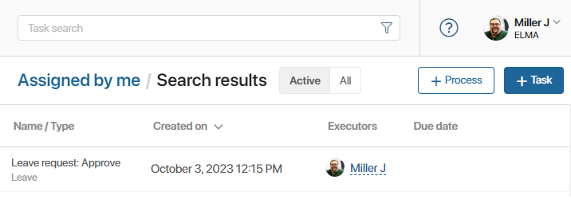
If you check the Notify about start option, a notification will pop-up whenever the process is started. A notification will also be posted to your #Activity stream. This option is enabled by default.
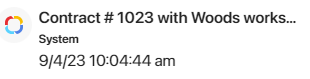
Name
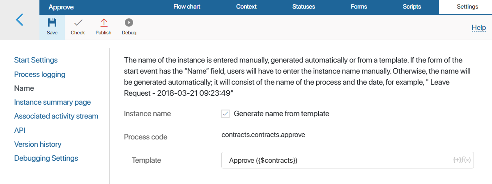
On this tab, as well as in the settings of the Start event, you can add a name template for the process instance. Once it’s done, you won’t need to name a process instance manually every time the process is started.
In the Template field, enter a name for the process instance. You can also add a context variable if necessary (for example, the full name of the initiator). To access the list of available variables, click the {+} icon on the right of the field.
With the f(x) icon you can add conditions and functions to the template. This will generate a more informative name
If you have created a name template in the settings of the start event, it will be displayed in this section.
Instance summary page
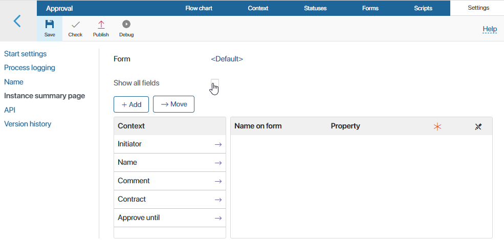
In this section, you can configure the layout of the instance summary page. By default, the page displays all the context variables of the process. To hide certain variables, uncheck the Show all fields option. Then drag the variables you need to see on the page from the Context column to the Name on form column.
If necessary, you can configure a custom form for the instance summary page, add or delete tabs, move fields, and change the content of the sidebar. To do this, use the form editor. Click the <Default> link in the upper left corner and select +Create Form. Read more about how to work with the form editor in Forms tab.
You can find the instance summary page in Tasks > Assigned by me.
Associated activity stream
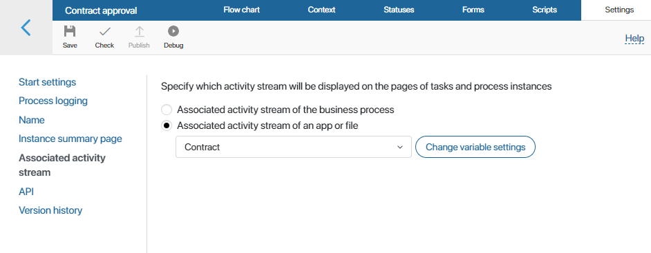
Select which activity stream will be shown in process tasks and on the instance summary page:
- Associated activity stream of the business process. Messages sent to the task activity stream will be displayed on the process instance summary page.
- Associated activity stream of an app of file. In the field provided below, select a variable of the App of File type. Then, the activity stream of the app item or file stored in the variable will be displayed on the process task and process instance pages. So, if a variable of the App type is selected and a message is sent during a process in a task, you will see it on the item page of that app. In case the variable is empty, the message will be displayed only in the process instance activity stream.
Example of applying associated activity stream settings
|
API
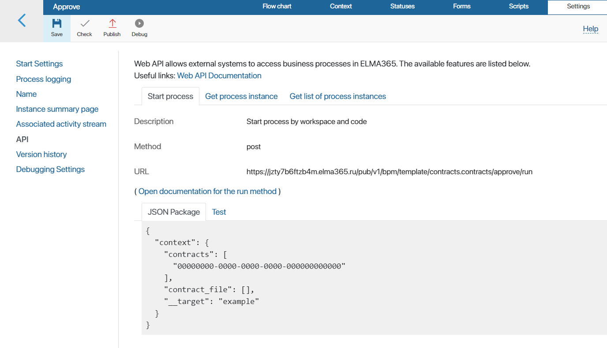
This tab describes the available API and provides its description, method, and the URL.
- Description. How the API is used.
- Method. Type of HTTP request that lets the server know what kind of action you want to perform.
- URL. Address of the request.
- JSON package. The text of the request.
- Test. On this tab, you can check the request to make sure it is error-free.
Using an API, you can integrate BRIX with your information systems. For example, after a customer places an order on your website, the order handling process can start automatically.
Version history
When you modify a process, you need to publish it so that the new version is executed when it is started. All published versions of a process are displayed on the Version history tab. Here you can find information about the author, the publishing time, and the comment the author wrote. Click the 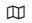 icon to view the process version map. You can also restore the process to an earlier version. To do that, select the version you need, click the icon, and confirm that you want the restore the process to this version.
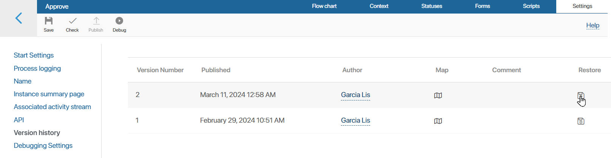
The configuration of the selected version will be applied to the process draft on the Flow chart tab. All saved but unpublished changes will be lost.
You can edit a restored process diagram, change the order of its activities and task forms. To apply the new version, click Save and Publish on the process designer top toolbar one more time.
Note that all process instances started before the new version is published will be run and completed without the recent changes. Read more in the Publish a business process article.
Debugging settings
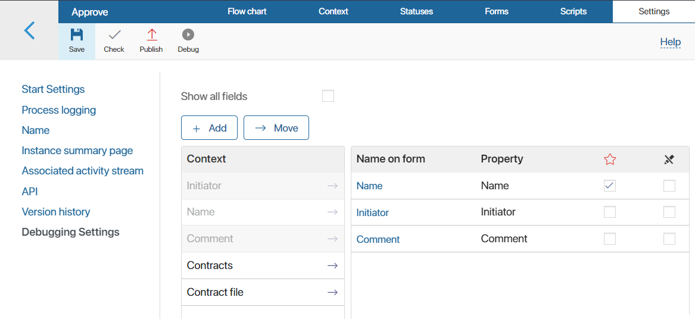
You can configure the layout of the process debugging start window to fill out it with process context variables. To do this, drag the desired fields from the Context column to the Name on form column. This will ensure that the fields in the start event and subsequent tasks of the process are not filled in during the process debugging. If you want to display the entire process context on the form, enable the Show all fields option.